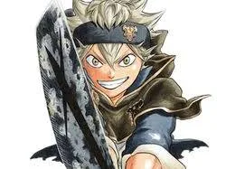

No magic. No giving up.
Who is Asta?
Asta has no magic, but he is determined to become the Wizard King.
Left at a church as a baby, he grows up working hard alongside his rival Yuno. Just when it seems he will never get a grimoire, a five-leaf clover grimoire appears and changes everything.
Abilities
Asta uses anti-magic and powerful swords.
Plus, he is incredibly strong, a surprisingly popular guy, and a threat to anyone relying on magic.
Personality
Asta starts out loud and relentless, but his determination makes him easy to root for. He never backs down from a challenge, even when Yuno gets another impressive power-up.
Contact
Questions about Asta? Reach the Black Bulls at help.asta@blackbulls.info or 920-111-1111.
After receiving his grimoire, Asta wears a pouch strapped to a brown leather belt. Additionally, as a member of Black Bull, he wears his squad's signature robe, which is black and short with gold trimming and covers the upper half of his torso. It also has a hood and a gold-colored button located at the right-hand side to hold it together, while the left-hand side displays the squad's insignia.